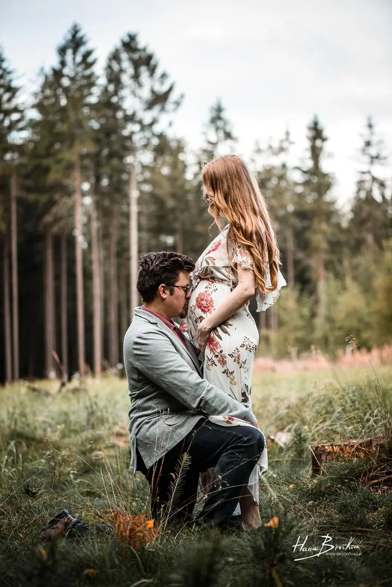
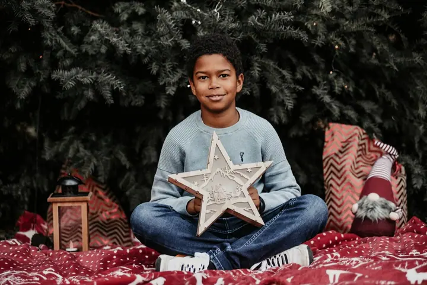

jedna
Malé svatby
Specializuju se na malé svatby, obřady v úzkém kruhu, svatby ve dvou nebo rychlou radnici s proseccem za rohem. Fotím krátký obřad s portréty i celý den od příprav po první tanec.

Svatební a portrétní fotografka · Praha, Středočeský kraj

Jmenuji se Hana Brožková a v Praze a okolí fotím hlavně malé svatby, ale také rodiny a těhotné a portréty. Fotím nenápadně, přirozeně a citlivě, bez zbytečného pózování a bez stresu.
Více o mněCo fotím
jedna
Specializuju se na malé svatby, obřady v úzkém kruhu, svatby ve dvou nebo rychlou radnici s proseccem za rohem. Fotím krátký obřad s portréty i celý den od příprav po první tanec.
dvě
Společné chvíle, dovádění dětí, zásnuby nebo čekání na miminko. Fotím v ateliéru na Vinohradech, venku v Praze i u vás doma.
tři
Business portréty, fashion a promo fotografie pro vaši práci i prezentaci. Fotografie máte do tří dnů.
Firemní akce, konference, tiskové konference, akce neziskových organizací, ale také křtiny, narozeniny nebo rozlučka se svobodou.
Bez pózování, bez stresu, hlavně spolu.


Za objektivem
Začínala jsem v roce 2008 jako fotografka eventů a hudebních festivalů, jako byly Rock for People, Benátská noc nebo Colours of Ostrava. Tam jsem se naučila zachytit okamžiky, které se neopakují, a čekat na to správné světlo. Pak přišlo divadlo, hlavně RockOpera Praha, kde jsem se naučila splynout s atmosférou a nerušit. A nakonec portrét, ve kterém jsem se našla.
Svatbám se intenzivně věnuji od roku 2012. Nejdřív jsme je s kolegou fotili ve dvou pod značkou HSphoto, v roce 2020 jsem spustila svůj sólový projekt Malé svatby. Čím dál víc lidí netouží po velké svatbě, ale po malém obřadu v rodinném kruhu a oslavě s přáteli později. A právě takové dny mám nejraději.
Do jara 2023 jsem byla oficiální fotografkou prezidenta České republiky a fotila jsem i pro ministerstva, magazíny a firmy. Jsem na volné noze, takže si čas umím zařídit podle vás, ve všední dny, o víkendech i ve svátky. Fotím hlavně v Praze a nejbližším okolí, ale klidně za vámi vyrazím i dál.
Hana
Napište mi přes kontaktní formulář, co plánujete, a rovnou přidejte pár termínů, které by se vám hodily.
Sejdeme se osobně nebo online a balíček upravíme podle toho, jak si svůj den nebo focení představujete.
Fotím nenápadně a bez stresu. Momenty, detaily i emoce zachytím tak, jak přirozeně přicházejí.
Upravené fotografie dostanete do 14 dnů v zaheslované online galerii, business portréty do tří dnů.
Portfolio
Otázky
Hlavně v Praze a ve Středočeském kraji. Mám ateliér na Vinohradech, fotím ale i venku nebo u vás doma. Na svatbu za vámi klidně vyrazím i dál.
Balíčky malých svateb vycházejí od 4 900 do 11 900 Kč podle délky. Celý den v rozsahu zhruba 6 hodin s více než 250 upravenými fotografiemi stojí 10 500 Kč, každá další hodina 1 500 Kč.
Rychlé a efektivní focení zhruba na 30 minut začíná na 1 700 Kč. Vybíráte si z už upravených fotografií a každý balíček má strop, takže nikdy nezaplatíte víc než za všechny fotky.
Focení venku při špatném počasí přesuneme, buď v rámci dne, nebo na jiný termín, případně můžeme fotit v ateliéru. Když onemocníte, stačí mi dát vědět a termín zrušit 24 hodin předem.